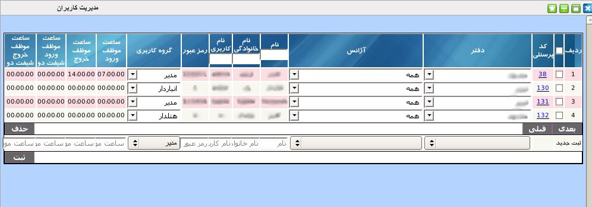
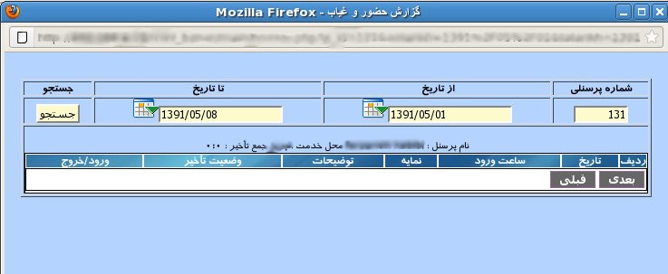

۱-مدیریت کاربران
در قسمت مدیریت کاربران, می توان بر دسترسی کاربران مجموعه به قسمت های مختلف نرم افزار مدیریت داشت. در این پنل به شما امکان حذف اضافه و ویرایش اطلاعات کاربران داده شده است. دسترسی این کاربران بر اساس گروه کاربری شان متفاوت است. لازم به توضیح است که فقط کاربر ارشد می تواند اطلاعات کاربران دیگر را مشاهده, ویرایش و حذف نماید. کاربران دیگر در این پنل فقط اطلاعات کاربری خود را مشاهده می نمایند.

برای ثبت کاربر جدید از قسمت پایین پنل مدیریت کاربران می توانید نام دفتر کاربر مورد نظر و سپس نام آژانس مربوط را انتخاب نمایید. سپس نام , نام خانوادگی, نام کاربری و رمز عبور را وارد کنید. همچنین می توانید برای کاربر ساعت ورود و خروج در هر شیفت کاری را تعیین نمایید. پس از ورود اطلاعات بر روی دکمه ثبت کلیک نمایید.
جهت جستجوی یک کاربر خاص می توانید نام, نام خانوادگی و یا نام کاربری کاربر مورد نظر را در محل عنوان ستون های مربوطه وارد کنید و کلید Enter را بزنید.
جهت ویرایش مقادیر هر آیتم بر روی آن کلیک نمایید و پس از تصحیح کلید Enter را بزنید.
جهت حذف تکی هر آیتم, موس خود را بر روی شماره ردیف آیتم برده و بر روی لینک حذف کلیک نمایید.
جهت حذف گروهی آیتم ها, آیتم های مورد نظر را انتخاب و بر روی دکمه حذف کلیک نمایید.
جهت مشاهده گزارش حضور و غیاب کاربر بر روی کد پرسنلی کاربر در ستون اول جدول کلیک نمایید.

در صفحه مشاهده می توانید بازه تاریخی موردنظر را انتخاب و بر روی دکمه جستجو کلیک نمایید تا گزارش کاملی از ساعات ورود و خروج و تاخیر های کاربر ببینید.